Research
Post-doctoral Research at Brown University
with Prof. Kenny Breuer (Winter 2011--Present)
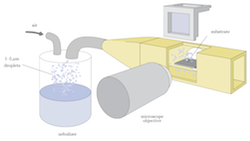 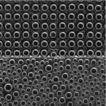Fog capture
Fog capture is desirable as a water resource in remote areas that receive a large amount of fog, such as the Namib desert and the mountains of Peru. In addition, fog removal can improve visibility around roadways and airports---thus, reducing traffic accidents and delays. On smaller scales, fog can ruin the favorable wetting properties of hydrophobic, micro-textured substrates.
For this project, I constructed a wind tunnel for imaging flows with micron-sized droplets suspended in air (i.e. fog). In order to characterize the flow and measure the accumulation of water on flat and micro-textured substrates, I implemented particle-tracking and circle-finding algorithms in Python.
Ph.D. Research at MIT
with Ph.D. advisor A. E. Hosoi and Prof. Vladimir Bulović (Fall 2007--Fall 2010)
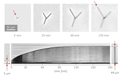 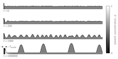Simulations of organic-crystal-needle formation via solvent-vapor annealing
Organic semiconductors are attractive materials for creating flexible, light-weight, and transparent electronics at low costs. In addition, single crystals of the semiconductor increases charge-carrier mobility and can promote nonlinear optical phenomena.
For my Ph.D., I constructed an experiment to measure the growth rates of single-crystal needles of tris(8-hydroxyquinoline) aluminum---i.e. Alq, an organic semiconductor commonly used in organic LEDs---during annealing in methanol-vapor. I modeled this system as a thin, liquid film composed of a mixture of Alq & methanol and driven by intermolecular forces, surface-tension, & diffusion. Simulations based on this model compared favorably with experimental measurements. See my PhD thesis for details.
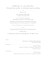MIT 18.358: Hydrodynamics and Elasticity (class project)
with Prof. Christophe Clanet and Prof. Sunghwan "Sunny" Jung (Spring 2008)
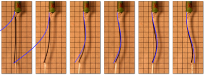Static shapes and instability of flags conveying fluid
We investigate a simple experiment, where a long, thin sheet, i.e. "flag" (black in image) is clamped to a jet-nozzle (green in image). The jet wets and flows along one side of the flag from base (clamped end) to tip, which hangs freely. At low flow rates numbers, we observed stable, static flag shapes with wavelengths inversely proportional to the flow rate. The static shapes are well described by a simple model (blue in image) coupling linear beam bending and inviscid flow. At higher flow rates, static shapes become unstable, leading to periodic oscillations analogous to previous work on hanging cantilever tubes conveying fluid (Paidoussis, 1970; Doare and Langre, 2002). The observed critical flow rates for instability agree well with those predicted by linear stability analysis.
MIT 18.358: Hydrodynamic Stability and Turbulence (Class Project)
with Prof. Eric Lauga (Spring 2007)
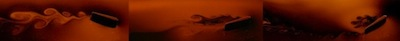Transition from drag to thrust in a flapping foil
Most objects in fast-moving flow shed vortices of alternating sign, this is known as a Bernard-von Karmann vortex street. For flapping objects (e.g. wings or fish tails) that generate thrust, we observe a similar wake, but with opposite rotation. I built a soap film tunnel and attempted to visualize the transition between these two cases; unfortunately, my experimental setup didn't allow me to observe the later phenomenon. Here's my final presentation from the class, but it's pretty incomprehensible because it's just a series of pictures with almost no text.
Note: At the 2008 APS DFD meeting, Teis Schnipper presented a similar experiment with amazing results.
Master's Research at MIT
with thesis advisor A. E. Hosoi and Prof. Eric Lauga (Fall 2004--Fall 2006)
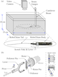 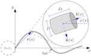 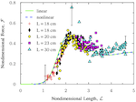Elastic-tail swimming at low Reynolds number
For my master's degree, I built a mechanical swimmer, which used a passive, elastic tail to generate propulsion in low Reynolds number environments. Here's a link to my quals presentation and my master's thesis; both of which talk about my swimmer:
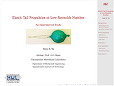Publications
- Tony S. Yu, Joonsik Park, Hyuneui Lim, and Kenneth S. Breuer "Fog Deposition and Accumulation on Smooth and Textured Hydrophobic Surfaces", Langmuir 28, 2012
- Tony S. Yu, "Solidification in a thin liquid film: Growing Alq3 needles via methanol-vapor annealing", PhD thesis, MIT, 2011.
- Renaud Trouilloud, Tony S. Yu, A. E. Hosoi, and Eric Lauga, "Soft Swimming: Exploiting Deformable Interfaces for Low Reynolds Number Locomotion", Physical Review Letters 101, 2008.
- Tony S. Yu, "Elastic Tail Propulsion at Low Reynolds Number", Master's thesis, MIT, 2007.
- Tony S. Yu, Eric Lauga, and A. E. Hosoi, "Experimental investigations of elastic-tail swimming at low Reynolds number." Physics of Fluids 18, 2006.
- Charles Kutscher, Nate Thomas and Tony Yu, Analysis of a Subatmospheric Flash Power Cycle. Geothermal Resources Council Transactions 29, 2005.